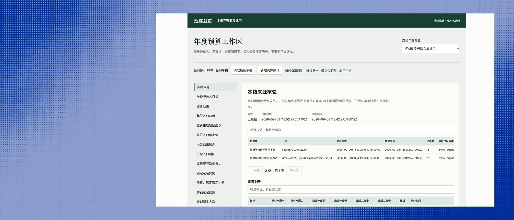
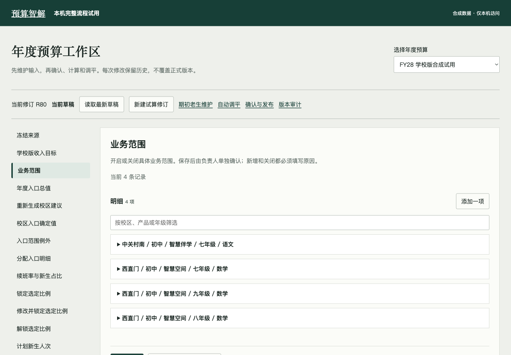
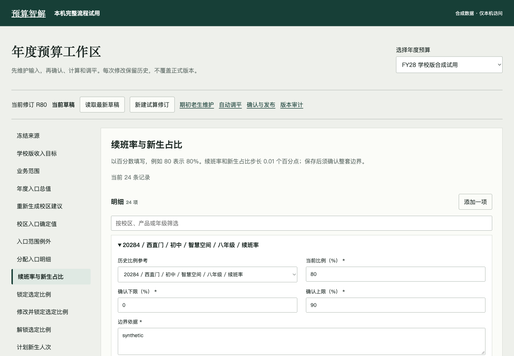
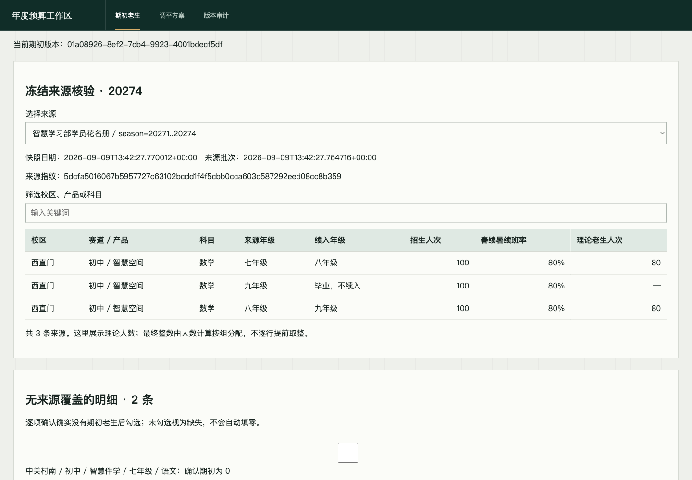
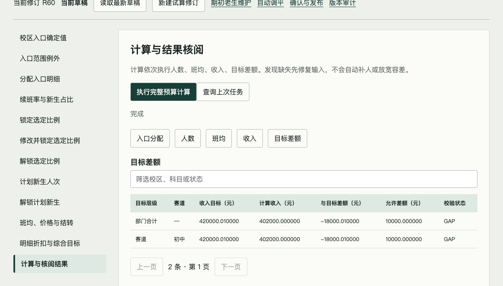
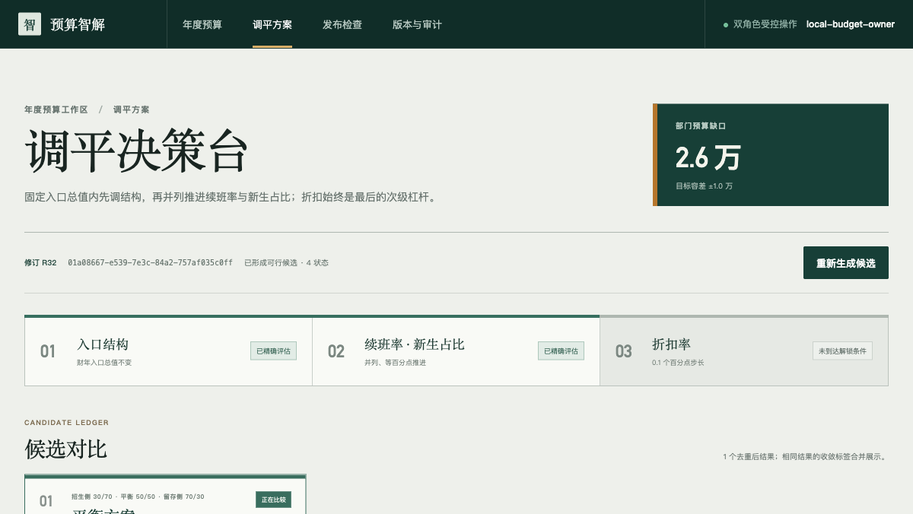
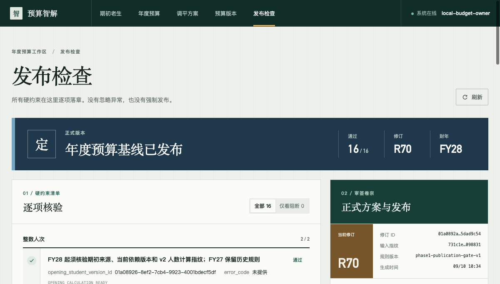

多维
拆解
总额要拆到校区、产品、年级、科目和季度；一处改动，后面都要重算。
总额要拆到校区、产品、年级、科目和季度；一处改动，后面都要重算。
考核口径、经营口径和预算口径名字相似，却不能直接混用。
人数、班均、收入互相影响；补缺需要多轮调整，还要守住业务边界。
谁改了什么、为什么改、用了哪批数据，普通表格很难完整回答。
先分人数，再算收入；有缺口才调整；硬性条件不通过，就不能发布。

业务操作入口
发布检查通过
项全部通过






自动汇总、分配、取整、重算和检查，所有方案都必须在确认边界内。
校区资源、新业务、参数上下限和候选方案，仍由数据维护人员和预算负责人最终确认。
系统把一致性做好，业务仍对经营判断负责。
数据、参数、版本和操作全部可查，正式基线不被直接改写。
下一关是真实数据业务试用，通过后再部署到学校内网。